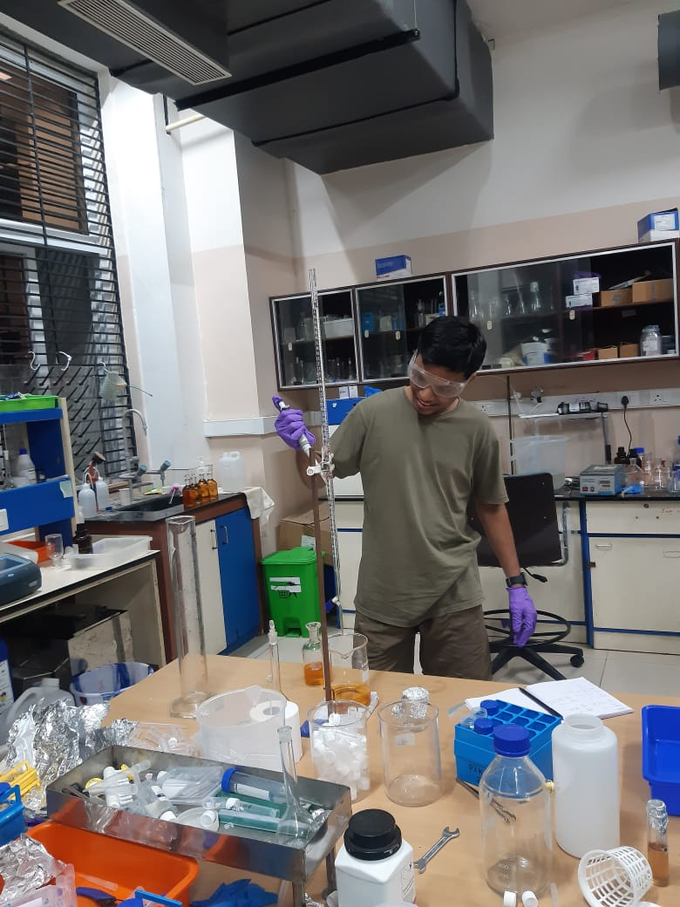

Nithin Salevemula, Shreyas Pai — Distributed MIS Algorithms for Rational Agents using Games
SIROCCO 2026
PDF
I am a PhD scholar at IIT Madras, with Shreyas Pai as my academic advisor.

I work on problems at the intersection of distributed computing, game theory, and cryptography.
Email: nithinprakash9999@gmail.com